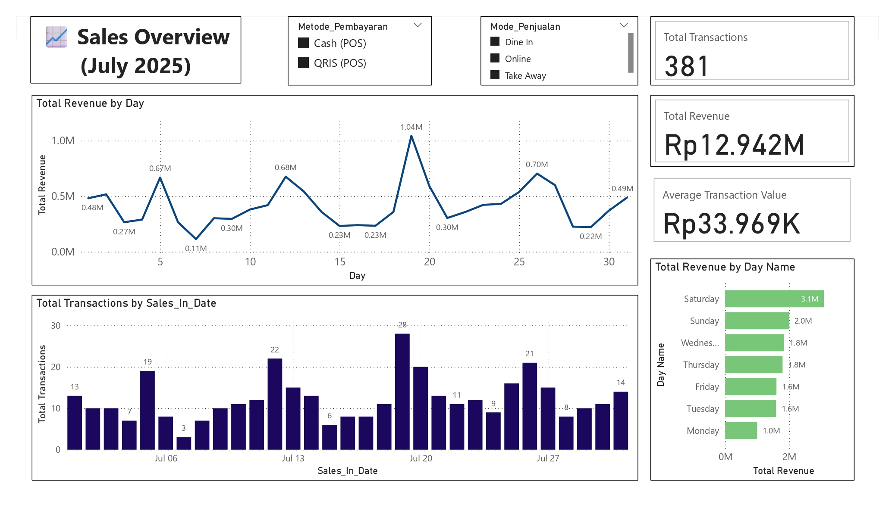
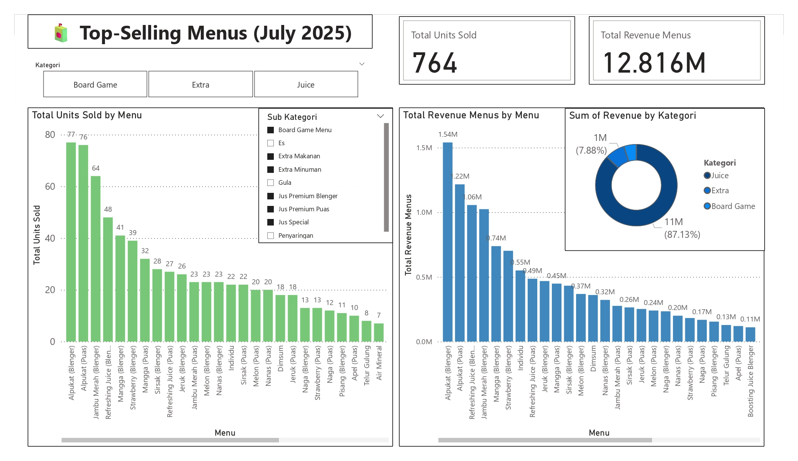
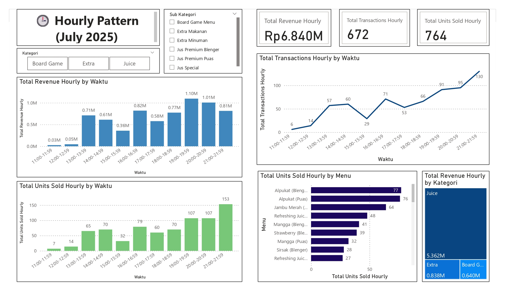
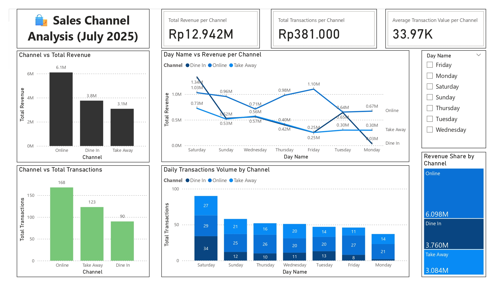

Justy Business Analytics
End-to-End Data Pipeline & Sales Performance Dashboard
End-to-End Data Pipeline & Sales Performance Dashboard
This project was developed to support operational analysis for a café business using real transaction data from a POS system.
The objective was to transform raw transaction data into actionable insights for monitoring sales performance, product trends, and customer behavior.
The POS system used by the business did not provide structured data export for detailed transaction breakdowns.
While summary transaction data was available, item-level details had to be accessed manually per transaction, making analysis inefficient and non-scalable.

Daily revenue trends and transaction volume overview.

Identification of best-selling menu items by volume and revenue.

Analysis of peak sales hours to understand customer activity patterns.

Comparison of sales performance across dine-in, online, and take-away channels.
A custom web scraper was developed to automate data extraction from the POS system, replacing manual per-transaction retrieval.
This component enables a repeatable data pipeline and ensures consistent data availability for analysis.